Trà Lipton cam thảo
Trà Lipton cam thảo là một trong những biến tấu đặc biệt từ trà Lipton truyền thống, được kết hợp giữa các nguyên liệu tự nhiên có hương thơm thanh mát và nhẹ nhàng. Với cách làm đơn giản sẽ mang đến cho bạn thức uống tốt cho sức khỏe, thích hợp thưởng thức vào những ngày oi bức hay muốn thanh lọc cơ thể. Để hiểu rõ hơn về hương vị của món trà lipton cam thảo này, hãy cùng tham khảo thêm phần công thức dưới đây nhé!
Độ khó
Rất dễ

Thời gian
20 phút

Khẩu phần
2 người
Hướng dẫn thực hiện
-
Cho 2 gói trà túi lọc Lipton nhãn vàng vào bình, rót 400ml nước sôi vào trà và đậy nắp để ủ khoảng 15 phút.
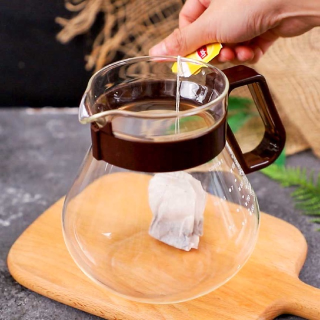 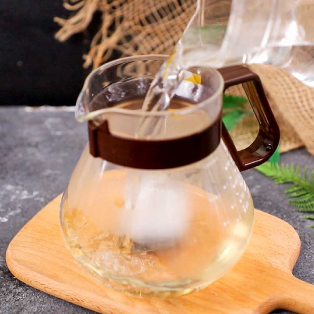 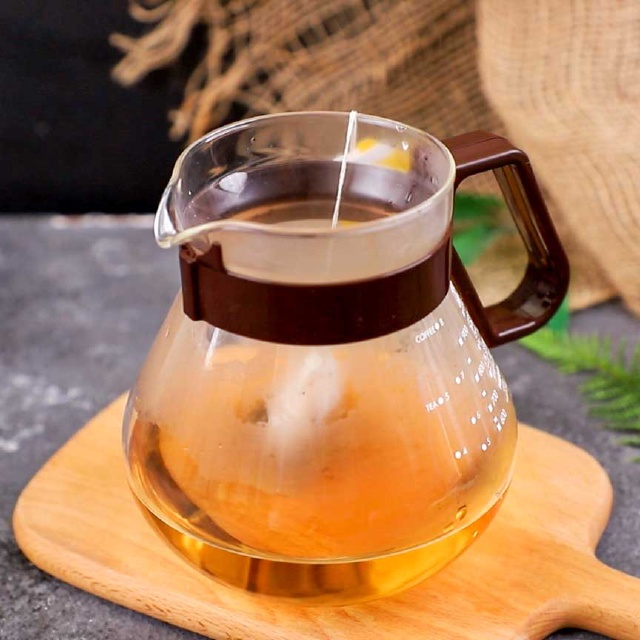 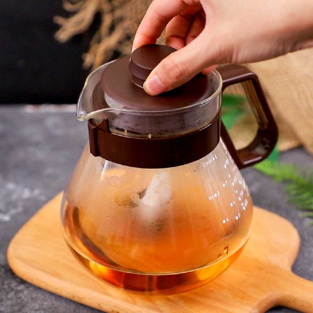 -
Sau khi ủ, bạn lấy bỏ túi trà ra và cho 30gr đường phèn vào, dùng muỗng khuấy đều.
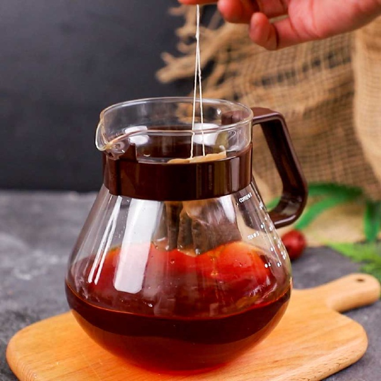 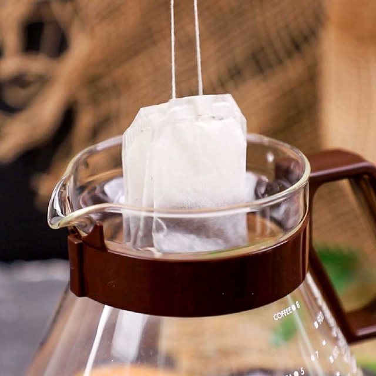 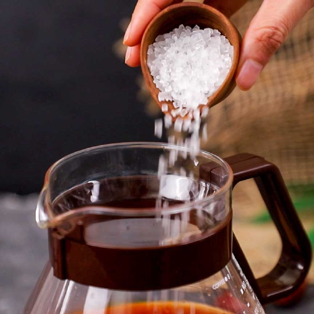 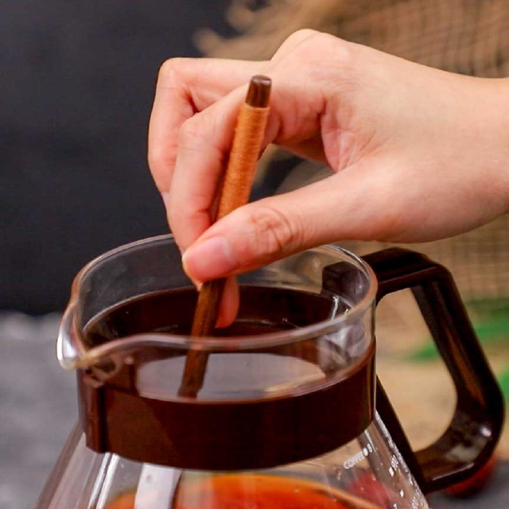 -
Cho 20ml nước cốt chanh, thêm 10gr cam thảo cắt lát, 15gr táo tàu,15gr xí muội và 15gr kỷ tử vào phần trà. Dùng muỗng khuấy đều để các nguyên liệu tăng thêm hương vị, giúp đồ uống đậm đà hơn.
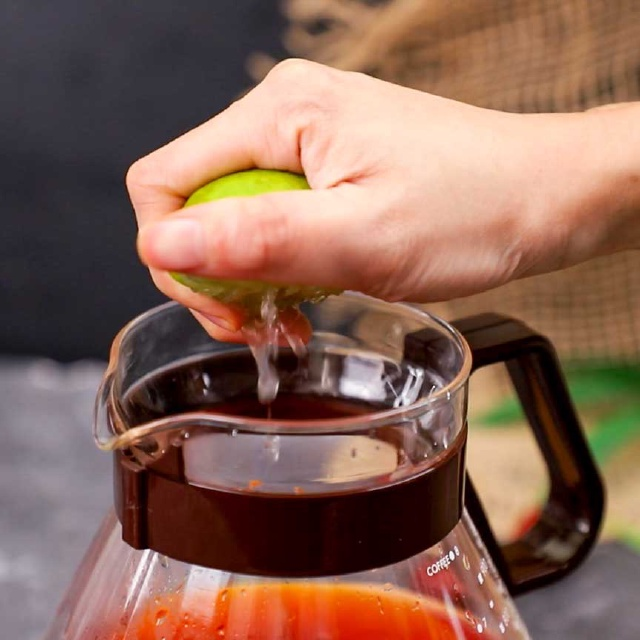 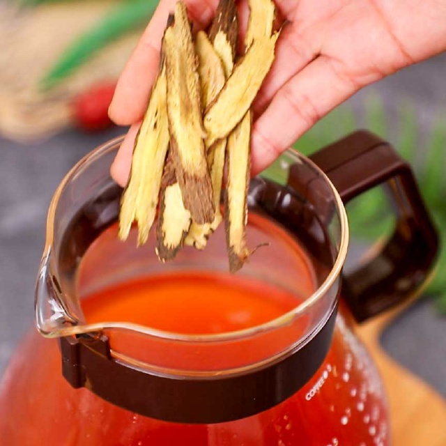 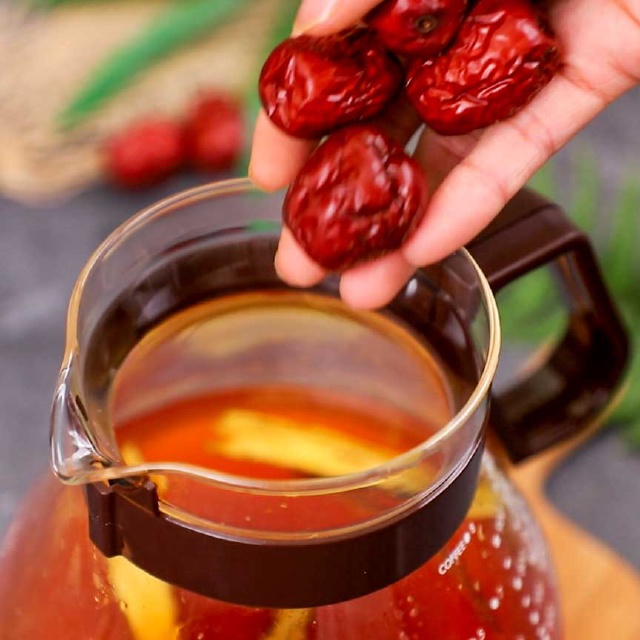 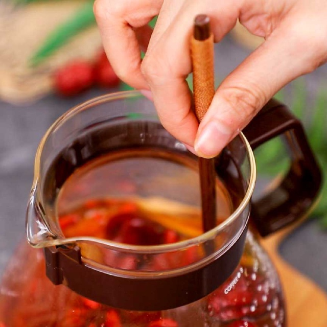 -
Thêm đá viên vào ly, rót phần nước vào rồi cho phần topping lên trên cùng và thưởng thức.
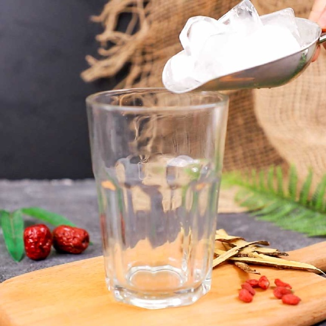 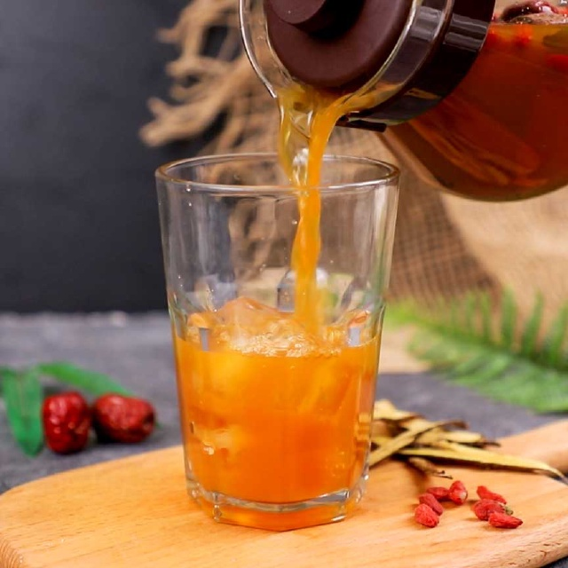 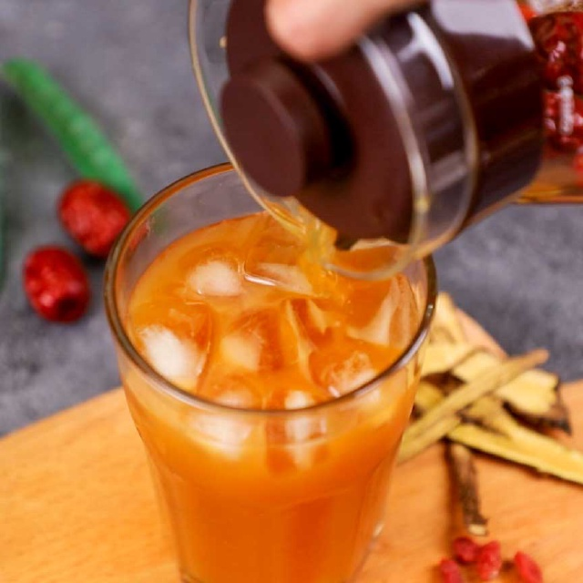 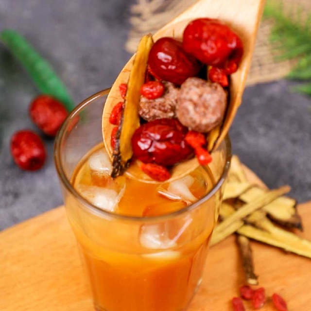